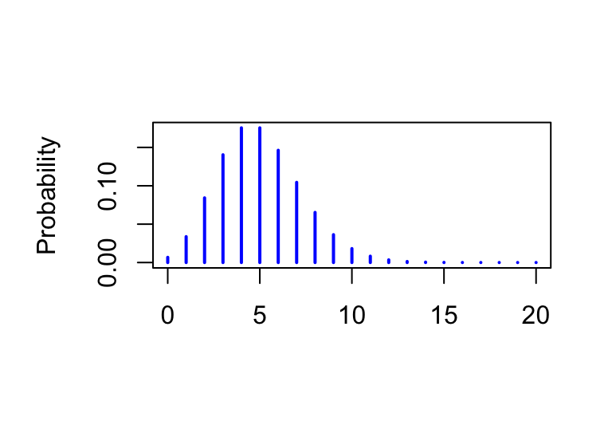

We will assume an experiment (or observational process) results in a single outcome (though that single outcome may be as complex as we’d like). A is the collection of all possible of that experiment. An is just one collection of outcomes.
We usually think of probability as a measure of uncertainty, which is it is. But probability is also a special type of function that takes in and gives in such a way that the two different algebras work together: !
\[ \mathbb{P}(B|A) = \frac{\mathbb{P}(A \cap B)}{\mathbb{P}(A)} \mbox{.}\]
Suppose we have three events : \(A\), \(B\), \(C\).
Conditioning allows us to turn joint probabilities into multiplications of conditional probabilities: \[\begin{eqnarray*} \mathbb{P}(A \cap B \cap C) &=& \mathbb{P}(A | B \cap C) \cdot \mathbb{P}(B|C) \cdot \mathbb{P}(C) \\ & = & \mathbb{P}(C | A \cap B) \cdot \mathbb{P}(A|B) \cdot \mathbb{P}(B) \\ & = & \mathbb{P}(B | A \cap C) \cdot \mathbb{P}(A|C) \cdot \mathbb{P}(C) \\ & & \mbox{\textcolor{blue}{(... and three more, to boot...)}} \end{eqnarray*}\]
Two events \(A\) and \(B\) are independent if \[ \mathbb{P}(A \cap B) = \mathbb{P}(A) \cdot \mathbb{P}(B) \mbox{.}\] Put another way: \[ \mathbb{P}(A | B) = \mathbb{P}(A) \mbox{.}\]
For notation, we write \[ A \perp B \] to indicate that events \(A\) and \(B\) are independent.
But there isn’t just one independence: events may be independent in a variety of ways! Statistically, we are often interested when one event induces other events to be independent, which we call : \[ A |C \perp B |C \Leftrightarrow \mathbb{P}(A \cap B |C) = \mathbb{P}(A |C) \cdot \mathbb{P}( B |C) \mbox{.}\]If \(A_1,\cdots, A_N\) form a partition for \(S\) and \(E\) is an event in \(S\) then:
\[\mathbb{P}(E) = \sum_{i=1}^N \mathbb{P}(E | A_i ) \cdot \mathbb{P}(A_i) \mbox{,}\]
Bayes’ Theorem is a direct consequence of conditioning: \[\mathbb{P}(A | B) = \frac{\mathbb{P}(B | A) \cdot \mathbb{P}(A)}{\mathbb{P(B)}} \]
\end{frame}
Suppose we have a set of independent trials that each record a binary trial, where the probability of a positive outcome is \(p\).
We write these RVs as \(X_1,\cdots, X_N \stackrel{i.i.d.}{\sim} \mbox{BERNOULLI}(p).\): All trials are the same.
: \(\mathbb{P}(X_i=k, X_j =r) = \mathbb{P}(X_i=k) \cdot \mathbb{P}(X_j=r)\)
Then: \[ Y = \sum_{i=1}^N X_i \sim \mbox{BINOMIAL}(N,p) \mbox{.}\] Which also means \[ X \sim \mbox{BINOMIAL}(1,p) \equiv \mbox{BERNOULLI}(p)\]
: \[ X \sim \mbox{BINOMIAL}(N,p) \Longleftrightarrow \mathbb{P}(X=k) = {N \choose K} \cdot p^K (1-p)^{N-K} \]
we can think of the binomial as \(N\) independent trials with binary (0/1) outcomes added together; Each trial has the same (\(p\)), the probability of a success. \
Suppose \[ X \sim \mbox{BINOMIAL}(N,p) \] and we observe that \(X=k\). A natural estimate for \(p\) is then \[\widehat{p} = \frac{K}{N}\mbox{.}\]
The (pmf) gives the probability of a discrete random variable taking a value.
\[X \sim \mbox{POISSON}(\lambda) \mbox{ for } X=0,1,2,\cdots \Longleftrightarrow \mathbb{P}(X=k) = \frac{e^{-\lambda} \cdot \lambda^k}{k!} \]
If \(X\) and \(Y\) are independent and \[ X \sim \mbox{POISSON}(\mu) \mbox{ and } Y \sim \mbox{POISSON}(\lambda) \] then \[X + Y \sim \mbox{POISSON}(\mu + \lambda) \]
Continuous random variables take continuous values. Consequently, the concept of probabilistic mass no longer works and we need to consider . It’ll be easiest to see this in context so let’s consider a specific example - the exponential random variable.
\[X \sim \mbox{EXPONENTIAL}(\lambda) \Longleftrightarrow f_X(x) = \lambda \cdot e^{-\lambda x } \mbox{ for } x \ge 0\]Notice that we write \(f_X(x) = \lambda \cdot e^{-\lambda x }\): this is the . This does not give the probability of exponential RV for each \(x\); it gives the density of the random variable.
\[ \mathbb{P}(a \le X \le b) = \int_a^b f_X(x) dx \]So the probability of observing a value between \(5\) and \(10\) is \[ \mathbb{P}(5 \le X \le 10) = \int_a^b \lambda e^{-\lambda x} dx \mbox{.}\]
\end{frame}